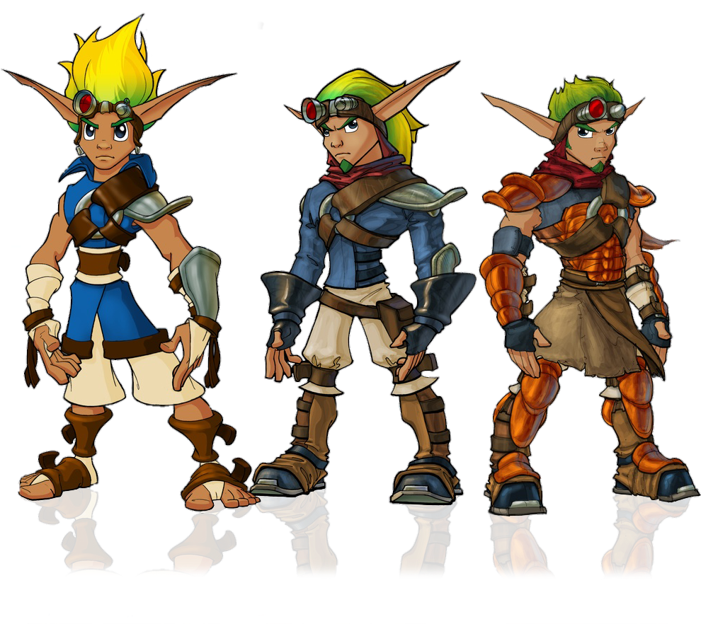
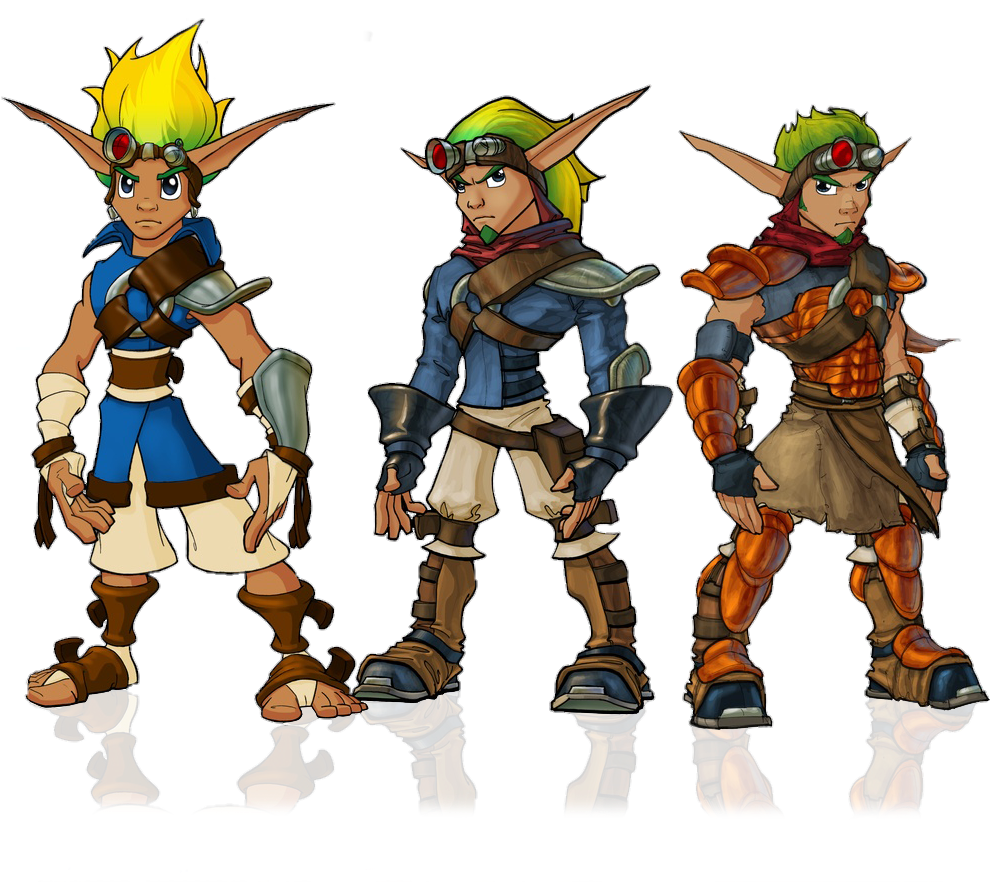

Mar (known as Jak) was born in Haven City before being sent back in time to Sandover Village to train for a destined life-path that he will have to face in the future after traveling back to Haven City. He is usually accompanied by his buddy, Daxter, who fell in dark eco and transformed into an ottsel. Jak was very shy and quiet as a get but after the torture he faced by the baron and dictator of Haven City, Praxis, he formed anger issues and trauma that continue to haunt as he faces his demons while trying to figure out the mystery of Mar, the founder of Haven City.